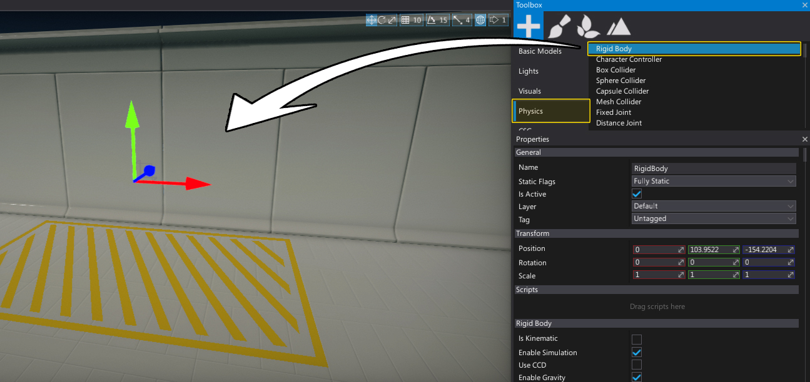

HOWTO: Create a bouncing ball
In this tutorial you will learn how to create and use a rigid body with a collider and physical material create a bouncing ball.
See Rigid Bodies page to learn more about rigid bodies.
1. Create a rigidbody
Firstly we need to spawn a rigidbody and place it somewhere in the level. Use a Toolbox window (Physics section) or a Scene window context menu.

2. Add collider and model
Add Sphere Collider actor and Sphere Model to rigidbody (as children) to it will have a physical shape along with a visual representation.
To do so use Toolbox window and drag and drop into the Rigidbody actor in a Scene window:
Drag and drop a Sphere Collider from the Physics section
Drag and drop a Sphere from the Basic Models section
3. Create a physical material
Use the Content window to create a new physical material asset. Right-click and select option New -> Physical Material. Specify its name and hit Enter to confirm.
Open created asset (double click on it) and set the Restitution to 1 so ball will bounce more. Remember to save the asset using disk icon.
4. Asign material to the collider
Drag and drop the created physical material into the Material property of the ball collider.
5. Test it out!
Hit Play button and test the bouncing ball. You can use the same physical material on a floor to simulate more bounces.